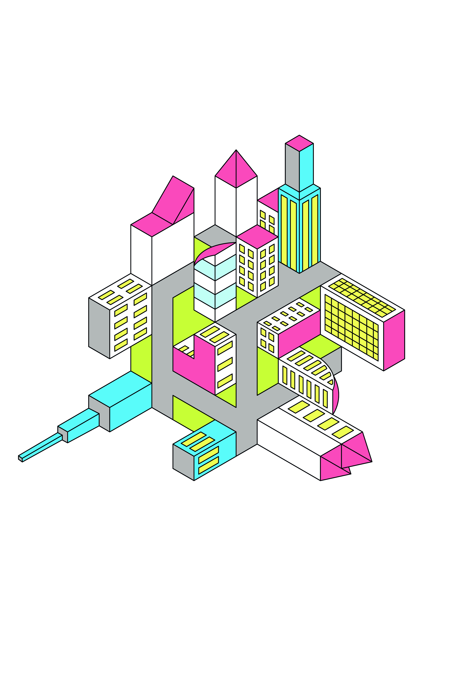
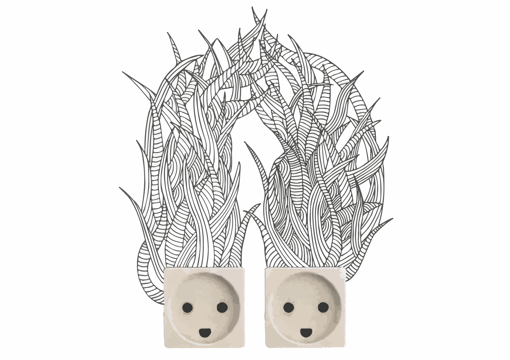

Ian Vannieuwkerke
Student MMP
Hallo ik ben Ian
Ik ben student digitaal grafische media aan de artevelde hogeschool in gent. Ik studeer de afstudeerrichting mulitmedia productie en wil graag afstudeeren in audiovisueel design. Na mijn studies geef ik scoutsleiding in 200ste FOS De Vleermuis in Dikkelvenne. Ik ben ook Vrijwilliger bij FOS open scouting bij de ploeg communicatie. Naast studeren en scouts ben ik bezig met fotografie en videografie. Ik fotografeer voor mijn eigen scouts groep en ook voor FOS open scouting maar ik maak ook video' en aftermovie's. Na mijn opleiding wil ik graag in een bedrijf werken dat in de video en film werled actief is en waar ik veel werkervaring kan opdoen om met deze kennis later op zelfstandige basis te kunnen werken.
Persoonlijke informatie
Naam:Ian Vannieuwkerke
Geboortedatum:01/01/1999
Leeftijd:19 jaar
Adres:Blokstraat 1 9890 Dikkelvenne
Gsm:0487653379
E-mail:ianvanni@student.arteveldehs.be
Portfolio
 